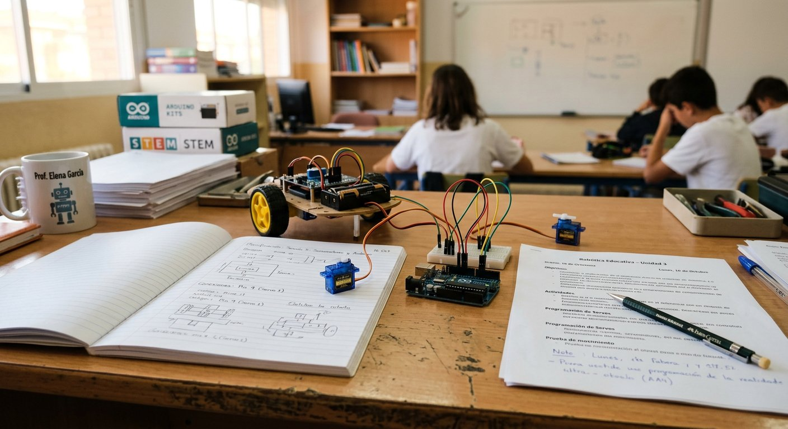

Qué cubre esta guía
- Por qué enseñar robótica en el aula
- Objetivos de aprendizaje por nivel educativo
- Enfoques: hardware físico, simulación o mixto
- Materiales y presupuesto para empezar
- Financiamiento y fondos disponibles en Chile
- Gestión del aula y roles de equipo
- Plan de unidad: 8 sesiones para adaptar
- Evaluación con rúbricas
- Primera actividad lista para usar
- Seguridad en el taller de robótica
- Problemas comunes y soluciones
- Preguntas frecuentes
Por qué enseñar robótica en el aula
La robótica educativa no es una moda tecnológica: es una metodología activa que obliga al estudiante a formular un problema, descomponerlo, diseñar una solución y validarla en el mundo real. A diferencia de una tarea de papel, un robot que no funciona da retroalimentación inmediata y no negociable, y esa iteración —probar, fallar, corregir, volver a probar— es exactamente el tipo de práctica que desarrolla perseverancia y pensamiento crítico.
- Pensamiento computacional: descomposición de problemas, reconocimiento de patrones, abstracción y diseño de algoritmos, habilidades explícitamente promovidas en los lineamientos curriculares de Tecnología y en las evaluaciones internacionales de competencias digitales.
- Integración curricular real: un robot que sigue una línea mezcla matemática (proporciones, ángulos, velocidad), ciencias (sensores, luz, electricidad) y tecnología (programación, mecánica) en un solo desafío, en lugar de enseñarlas como compartimentos separados.
- Aprendizaje basado en proyectos (ABP): cada sesión tiene un entregable observable (un LED que enciende, un sensor que responde, un robot que recorre una pista), lo que facilita la evaluación formativa y mantiene la motivación alta.
- Equidad de acceso: con placas compatibles de bajo costo y simuladores gratuitos, la robótica dejó de ser un lujo de colegios privados; esta guía está pensada justamente para hacerla viable en contextos con recursos limitados.
Objetivos de aprendizaje por nivel educativo
Los objetivos deben escalar con la edad y con la madurez cognitiva del grupo. La siguiente tabla propone una progresión coherente desde la educación parvularia hasta la enseñanza media, alineada con las habilidades que promueven las Bases Curriculares de Tecnología y Matemática en Chile.
| Nivel | Enfoque recomendado | Objetivos de aprendizaje |
|---|---|---|
| Educación parvularia (4–6 años) | Robots de piso tipo Bee-Bot / Blue-Bot, sin pantalla | Secuenciación de pasos, orientación espacial (adelante, giro), anticipación de trayectorias, trabajo en parejas |
| 1º a 4º básico (6–9 años) | Robots de piso y kits de construcción + programación por bloques | Causa y efecto, bucles simples, sensores básicos (botón, sonido), diseño y construcción de mecanismos simples |
| 5º a 8º básico (10–13 años) | mBot / micro:bit / Arduino con bloques (mBlock, MakeCode) | Condicionales, variables, sensores de distancia y línea, trabajo colaborativo con roles rotativos, documentación básica |
| Enseñanza media (14–18 años) | Arduino con código real (IDE) y/o kits de competición (VEX, SPIKE Prime) | Programación textual, funciones y estados, control proporcional, diseño de prototipos, bitácora de ingeniería, presentación de resultados |
No es necesario cubrir toda la progresión el primer año: la recomendación es elegir un solo nivel, dominarlo bien y expandir hacia niveles vecinos en los años siguientes, reutilizando el mismo equipamiento siempre que sea posible.
Enfoques: hardware físico, simulación o mixto
Antes de comprar nada, define qué mezcla de recursos usarás. Las tres opciones no son excluyentes y la mayoría de los talleres exitosos combinan las dos primeras.
- Simulación (costo cero): Tinkercad Circuits y Wokwi permiten programar un Arduino virtual, cablear circuitos y ver el resultado sin riesgo de dañar componentes. Ideal para la primera toma de contacto, para clases en línea y para que todos los estudiantes programen sin esperar turnos de hardware.
- Hardware físico: placas y componentes reales aportan el valor insustituible del error real: cables sueltos, polaridad invertida, sensores que necesitan calibración. Es el escenario donde se desarrolla la perseverancia y el trabajo en equipo.
- Kits cerrados: robots tipo mBot o kits de construcción (LEGO SPIKE, VEX) reducen la fricción de cableado y permiten concentrarse en la lógica de programación y el diseño mecánico; son más caros por estudiante pero más robustos para cursos numerosos.
Materiales y presupuesto para empezar
| Recurso | Especificación sugerida | Precio aprox. (CLP) |
|---|---|---|
| Placa Arduino Uno compatible | ATmega328P con cable USB | $6.000 – $15.000 |
| Set básico por equipo | Protoboard, 20+ jumpers, LEDs, resistencias, pulsadores | $2.000 – $5.000 |
| Sensor ultrasónico HC-SR04 | Para proyectos de distancia y robots evasores | $1.500 – $3.500 |
| Servomotor SG90 | Para brazos y mecanismos móviles | $1.500 – $3.000 |
| Robot mBot o similar (opcional) | Plataforma completa con chasis, motores y sensores | $60.000 – $90.000 |
| Computadores | Cualquier equipo que corra el IDE de Arduino o un navegador para el simulador | Reutilizar los existentes |
Con un esquema de 3 estudiantes por equipo, un curso de 30 estudiantes requiere 10 placas. Usando componentes genéricos, el taller completo puede equiparse por menos de 150.000 pesos chilenos en su versión mínima, y por alrededor de 250.000–350.000 pesos si se agregan sensores y servos para proyectos más ambiciosos. Comprar kits de marca eleva el costo por estudiante pero reduce el tiempo de preparación y la tasa de componentes dañados.
Financiamiento y fondos disponibles en Chile
El presupuesto no tiene que salir íntegramente del colegio. En Chile existen varias vías complementarias que conviene explorar antes de descartar el proyecto:
- Subvención Escolar Preferencial (SEP): los establecimientos que la reciben pueden destinar parte de los recursos a material didáctico y equipamiento de apoyo al aprendizaje, siempre que se justifique pedagógicamente en el Plan de Mejoramiento Educativo (PME).
- Fondos concursables públicos: programas de fomento de ciencia y tecnología escolar, como los fondos de innovación educativa del Ministerio de Educación y las iniciativas de Explora del Ministerio de Ciencia, financian proyectos de robótica y divulgación científica presentados por colegios.
- Centro de Padres y Apoderados: una presentación breve con objetivos, presupuesto y resultados esperados suele ser la vía más rápida para proyectos de mediana escala en colegios subvencionados.
- Alianzas con empresas locales: universidades, empresas tecnológicas y municipios frecuentemente apoyan talleres STEM con donaciones de equipos, espacios o voluntariado técnico.
- Reutilización y escalado por fases: empezar con simuladores (costo cero), luego placas sueltas y recién después kits completos, distribuye el gasto en dos o tres años fiscales.
Gestión del aula y roles de equipo
La principal variable de éxito de un taller de robótica no es el hardware, sino la organización de los equipos. Los grupos grandes generan estudiantes sin tarea y robots monopolizados por los más hábiles; los grupos de tres con roles rotativos resuelven ambos problemas.
- Constructor/a: arma el circuito o el chasis siguiendo el esquema, y es responsable de que las conexiones estén firmes y ordenadas.
- Programador/a: escribe y depura el código, y explica al resto del equipo qué hace cada parte del programa.
- Documentador/a: registra en la bitácora las decisiones, los problemas encontrados y las soluciones, y prepara la presentación del avance.
La rotación de roles debe ser obligatoria y visible (por ejemplo, rotar cada sesión o cada dos sesiones), para que ningún estudiante quede fijado en una sola tarea. Antes de cerrar cada clase, destina 5 minutos a una ronda rápida en que cada equipo muestre su avance y explique un problema que enfrentó; esto convierte los errores en material de aprendizaje compartido y da evidencia inmediata para la evaluación formativa.
Plan de unidad: 8 sesiones para adaptar
El siguiente plan de 8 sesiones (de 90 minutos cada una) está pensado para un taller introductorio con Arduino y programación por bloques, y puede acortarse, alargarse o reordenarse según el nivel y la disponibilidad horaria.
| Sesión | Objetivo | Actividad central | Entregable |
|---|---|---|---|
| 1 | Conocer el entorno y la placa | Presentación de la placa, instalación del IDE, primer Blink | LED parpadeando en placa real o simulador |
| 2 | Entender entradas y salidas | Encender un LED externo con resistencia; calcular valor con Ley de Ohm | Circuito de LED con resistencia correcta |
| 3 | Controlar flujo de programa | Secuencias, bucles y condicionales aplicados a LEDs y pulsadores | Semáforo o secuencia de luces |
| 4 | Leer sensores | Conexión y lectura de un sensor de distancia o de línea | Programa que muestra lecturas en el monitor serie |
| 5 | Actuar con motores | Control de un servomotor o de motores con driver | Mecanismo móvil simple |
| 6 | Integrar en un mini proyecto | Definición del desafío y construcción del prototipo | Prototipo funcional inicial |
| 7 | Depurar y mejorar | Pruebas, corrección de errores y mejora del diseño | Versión mejorada del prototipo |
| 8 | Comunicar resultados | Presentación por equipos: qué construyeron, cómo y qué aprendieron | Exposición + bitácora completa |
Este plan conecta de forma natural con los tutoriales prácticos ya publicados en este sitio: la guía del semáforo con LEDs sirve para las sesiones 2 y 3, y la estación meteorológica o el radar ultrasónico pueden convertirse en el proyecto integrador de las sesiones 6 a 8.
Evaluación con rúbricas
Evaluar robótica solo con una nota por el robot terminado pierde de vista el proceso, que es donde ocurre el aprendizaje real. Una rúbrica con cuatro dimensiones independientes da una imagen más justa y entrega retroalimentación accionable:
| Dimensión | Qué observar |
|---|---|
| Funcionamiento del prototipo | ¿Cumple el desafío planteado? ¿Es estable o falla de forma aleatoria? ¿Responde correctamente a las condiciones de prueba? |
| Comprensión del código | ¿El equipo puede explicar qué hace cada bloque o línea? ¿Puede modificar el programa a pedido y predecir el resultado? |
| Proceso y bitácora | ¿Registran decisiones, errores y correcciones? ¿Se evidencia iteración real o solo un resultado final? |
| Trabajo colaborativo | ¿Rotan roles? ¿Todos participan? ¿Resuelven desacuerdos de forma respetuosa? |
Comparte la rúbrica antes de empezar el proyecto: cuando los estudiantes saben exactamente qué se evalúa, la rúbrica funciona como guía de trabajo y no como un castigo sorpresa al final. La autoevaluación y la coevaluación entre equipos, al cierre de cada proyecto, refuerzan además la metacognición.
Primera actividad lista para usar
Esta actividad de apertura no requiere más que una placa, una protoboard, un LED, una resistencia de 220 Ω y dos cables. El objetivo es que en la primera sesión cada equipo vea un resultado tangible y entienda el ciclo completo: escribir, compilar, cargar y verificar.
// Actividad 1: El semaforo peatonal mas simple
const int PIN_LED = 8; // LED conectado al pin digital 8
// (recuerda la resistencia de 220 ohms en serie)
void setup() {
pinMode(PIN_LED, OUTPUT); // declara el pin como salida
}
void loop() {
digitalWrite(PIN_LED, HIGH); // enciende el LED
delay(1000); // espera 1 segundo
digitalWrite(PIN_LED, LOW); // apaga el LED
delay(1000); // espera 1 segundo
}Desafíos progresivos para la misma sesión, en orden de dificultad creciente:
- Nivel 1: cambiar los tiempos de encendido y apagado y predecir el efecto antes de probarlo.
- Nivel 2: agregar un segundo LED de otro color y crear una secuencia alternada entre ambos.
- Nivel 3: conectar un pulsador y hacer que el LED solo encienda mientras se mantiene presionado.
- Nivel 4 (extensión): reconstruir el semáforo completo de tres LEDs siguiendo la guía técnica del semáforo, incluyendo la máquina de estados.
Seguridad en el taller de robótica
Aunque los voltajes de Arduino (5V) no representan un riesgo eléctrico serio para las personas, el taller tiene otros riesgos que conviene gestionar con reglas claras desde el primer día:
- Alimentación: usar siempre la alimentación USB o una fuente de 5V regulada; nunca conectar la placa a fuentes mayores de 12V en el pin de alimentación, y revisar la polaridad antes de energizar.
- Componentes calientes: los reguladores de voltaje y algunos drivers de motor pueden calentarse; enseñar a no tocar y a desconectar antes de manipular.
- Herramientas: si el proyecto incluye pistola de silicona caliente, cúter o soldador, delimitar una zona de trabajo supervisada y establecer quién puede usarlas y cuándo.
- Baterías de litio: si se usan baterías para robots móviles, aplicar las mismas precauciones de esta guía de baterías de litio: nunca perforar, no cortocircuitar y cargar bajo supervisión.
- Orden del puesto: cables sueltos sobre la mesa son la causa más común de cortocircuitos accidentales; reservar los últimos 3 minutos de cada sesión para ordenar y guardar.
Problemas comunes y soluciones
| Situación | Causa probable | Solución |
|---|---|---|
| La placa no aparece al cargar el programa | Driver no instalado, cable solo de carga, o puerto equivocado | Verificar cable de datos, instalar driver CH340 si es placa compatible, seleccionar el puerto correcto en el IDE |
| El LED no enciende | Polaridad invertida o resistencia mal conectada | Girar el LED, revisar la continuidad del circuito en la protoboard |
| Un equipo termina mucho antes que los demás | Desafío poco escalable | Tener siempre desafíos de extensión preparados (niveles 2, 3 y 4 de la actividad) |
| Un estudiante monopoliza el robot | Roles no rotados o no explicitados | Rotar roles con regla visible y pedir que cada integrante explique una parte en la ronda de cierre |
| El sensor entrega lecturas erráticas | Alimentación ruidosa o conexiones flojas | Ajustar cables, promediar varias lecturas en el código, alimentar sensores con 5V estable |
| Falta de motivación al avanzar las sesiones | Proyectos sin conexión con intereses del grupo | Dar a elegir entre 2 o 3 desafíos finales equivalentes en dificultad |
Conclusión
Llevar la robótica al aula no requiere un laboratorio costoso ni una formación técnica previa: requiere objetivos claros, una planificación por fases, equipos bien organizados y la disposición a aprender junto con los estudiantes. Empezar con simulación gratuita, pasar a placas compatibles de bajo costo y recién después evaluar kits de marca permite validar el proyecto con poco riesgo y escalar con evidencia. Si esta guía te sirvió de punto de partida, los siguientes pasos naturales son definir qué kits convienen a tu contexto y conocer la programación por bloques con mBlock y Scratch, el punto de entrada más amigable para tus estudiantes.
Preguntas frecuentes
¿Necesito ser ingeniero o programador para enseñar robótica en el aula?
No. La robótica educativa actual está diseñada para que cualquier docente pueda guiarla, independientemente de su formación previa. Herramientas como la programación por bloques de mBlock o Scratch, los simuladores como Tinkercad Circuits y los kits con guías paso a paso permiten empezar sin experiencia previa en electrónica ni en programación. El rol del docente no es saber todas las respuestas técnicas, sino estructurar la clase, plantear desafíos, mediar la colaboración entre estudiantes y evaluar procesos de pensamiento; los detalles técnicos se aprenden junto con el curso.
¿Con qué presupuesto mínimo puedo empezar un taller de robótica?
Se puede empezar con un presupuesto muy bajo usando simuladores gratuitos como Tinkercad Circuits o Wokwi, que no requieren ningún hardware. Para pasar a componentes físicos, una placa Arduino compatible cuesta entre 6.000 y 15.000 pesos chilenos, y un set básico de protoboard, LEDs, resistencias y cables agrega entre 2.000 y 5.000 pesos más. Trabajando en equipos de 3 estudiantes, un curso completo de 30 alumnos puede equiparse con menos de 150.000 pesos chilenos si se priorizan placas compatibles y componentes genéricos antes que kits de marca.
¿Es mejor empezar con robots físicos o con simuladores?
Lo ideal es un enfoque mixto. Los simuladores permiten que todos los estudiantes programen sin esperar turnos por hardware, eliminan el miedo a dañar componentes y facilitan la tarea a distancia; los robots físicos aportan el componente real de cableado, errores de conexión, calibración de sensores y trabajo en equipo que ningún simulador reproduce por completo. Una secuencia eficaz es empezar cada unidad con simulación para entender la lógica, y pasar luego al hardware real para consolidar, validando el mismo código primero en el simulador y después en la placa física.
¿Cómo organizo a los estudiantes en equipos de trabajo efectivos?
Los equipos de 3 estudiantes suelen funcionar mejor que los grupos grandes, porque permiten repartir tres roles claros y rotarlos entre sesiones: constructor (arma el circuito y el chasis), programador (escribe y depura el código) y documentador (registra decisiones, problemas y resultados en la bitácora). La rotación obligatoria de roles es clave para que ningún estudiante se especialice en una sola tarea y para evitar que los más avanzados monopolicen el robot. Conviene agrupar intencionalmente mezclando niveles de habilidad y revisando que cada integrante pueda explicar el trabajo del equipo completo.
¿Qué competencias curriculares se desarrollan con robótica educativa?
La robótica educativa desarrolla pensamiento computacional (descomposición de problemas, reconocimiento de patrones, abstracción y diseño de algoritmos), pensamiento lógico-matemático, trabajo colaborativo, comunicación de ideas técnicas, creatividad en el diseño de soluciones y perseverancia frente a problemas abiertos. En el currículo chileno se vincula directamente con Tecnología, Matemática y Ciencias, y de forma transversal con habilidades del siglo XXI como la resolución de problemas, la comunicación y el trabajo en equipo, lo que la convierte en una herramienta de integración curricular más que en una asignatura aislada.
Este artículo es contenido editorial independiente: no contiene ubicaciones patrocinadas ni enlaces de afiliado. Si en futuras actualizaciones se agregan enlaces a proveedores de kits o componentes, serán identificados explícitamente. Los precios y programas de financiamiento son referenciales y pueden variar; verifica los montos y requisitos vigentes ante las entidades correspondientes. Si detectas un error en esta guía, por favor avísanos.
Sigue aprendiendo
Una vez que tengas la planificación lista, el siguiente paso es elegir el equipamiento: consulta Los Mejores Kits de Robótica Educativa para Colegios para comparar opciones por nivel y presupuesto.
Si tus estudiantes recién empiezan con la placa, acompáñalos con Primeros Pasos con Arduino Uno.
Fuentes primarias y lecturas recomendadas
Referencias que sustentan los conceptos generales de esta guía. Los requisitos específicos de financiamiento pueden variar según el año y la región.
- Currículum Nacional — Ministerio de Educación de Chile (Bases Curriculares de Tecnología)
- Subvención Escolar Preferencial (SEP) — Orientaciones para establecimientos
- Programa Explora — Ministerio de Ciencia, Tecnología, Conocimiento e Innovación
- Arduino Education — Recursos oficiales para el aula
Enlaces revisados: 13 de agosto de 2026.